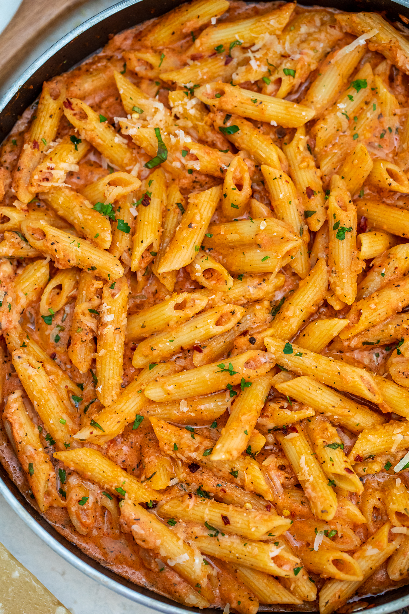

Pasta alla Vodka

Description
This is one of my favorite dishes, Pasta alla Vodka! It takes one
of my favorite childhood dishes and takes it to the next level.
Ingredients
- Box of Pasta of your Choice
- Onions
- Garlic
- Tomato Paste
- Heavy Cream
- Parmesan Cheese
- Red Pepper Flakes
- Meat - Italian Sausage or Ground Beef
Steps
- Bring a large pot of salted water to a boil (2 heaping tablespoons kosher salt to about 7 quarts water). Add the pasta and cook according to package instructions until al dente.
- Meanwhile, prepare the sauce: Heat the oil in a deep 12-inch skillet or pot over medium. Add the pancetta, if using, and fry until crispy, stirring occasionally, 3 to 5 minutes. Add the onion, garlic and red-pepper flakes and cook, stirring occasionally, until onion is translucent, about 3 minutes. Turn the heat to medium-low, add the vodka and cook until reduced by half, 2 to 3 minutes.
- Stir in the tomatoes and then fill the can halfway with water and swish it around to loosen up any leftover tomatoes; add a quarter to half of the water to the pan. Simmer until the sauce begins to thicken, about 10 minutes, and season with salt and pepper. If you prefer your sauce a little looser, go ahead and add the remaining water and simmer 2 to 3 minutes more. Reduce heat to low, add the cream and cook, stirring, until the sauce becomes an even pinkish-rust clior, about 1 minute.
- Stir in the cooked pasta and ¼ cup cheese; toss to coat. Season to taste with salt and pepper. Divide among bowls, top with additional cheese, if desired, and sprinkle with the oregano and parsley.